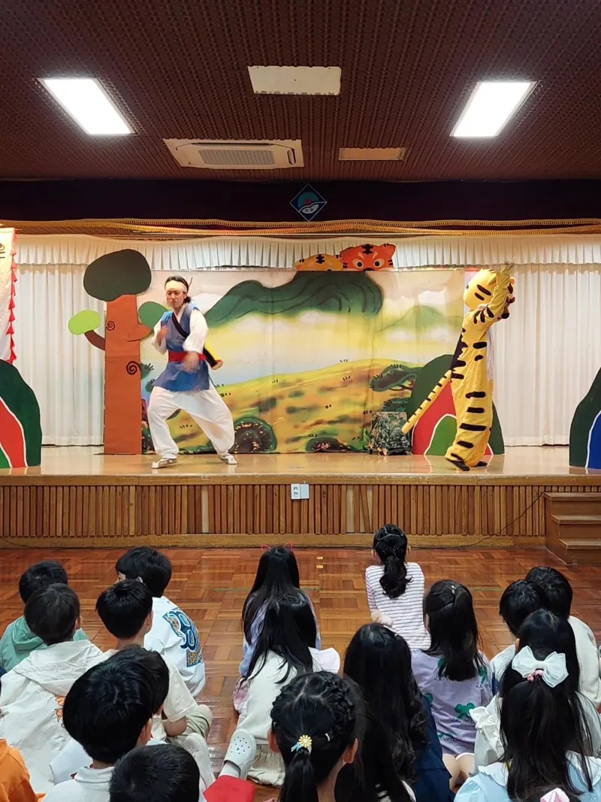

학교 · 교육청 사업
초등학교찾아가는 공연
학교 강당과 체육관으로 찾아가 학년과 교육 주제에 맞는 교육연극을 공연합니다.
- 초·중학교
- 강당·체육관
- 교육청 순회공연 참여
- 안전·예방·환경
한눈에 보기
아동극단 징검다리는 2018년부터 부산광역시교육청의 학교로 찾아가는 공연(예술플러스·공연드림)에 참여하고 있으며, 2016년에는 북부교육지원청 지역연계 문화예술사업으로 초·중학교를 순회했습니다. 전래동화 아동극부터 안전·성폭력 예방·환경을 다룬 교육연극까지 학년과 교육 주제에 맞춰 공연합니다.
최종 업데이트 2026년 10월 19일 · 아동극단 징검다리 · 문의 010-3837-8479
학교에서 이렇게 활용해요
학년 공연 · 전교생 공연
강당이나 체육관에서 학년별로, 또는 전교생이 함께 봅니다.
교육 주제 연계
안전 교육, 성폭력 예방 교육, 환경·생활습관 교육과 이어서 볼 수 있어요.
우리 옛이야기
은혜갚은 호랑이, 용궁으로 간 토끼처럼 전래동화와 고전을 무대로 만나요.
교육청 · 지자체 사업
교육청·지자체 문화예술 지원 사업으로 진행하는 공연도 상담합니다.
학교·교육 공연 이력
- 2018 - 현재
부산광역시교육청 학교 순회공연(예술플러스·공연드림)
- 2016
북부교육지원청 지역연계 문화예술사업 초·중학교 순회공연
- 2014
과학 소재 연극 '우당탕 과학탐험대' 부산 남부교육지원청 꿈키움네트워크 공연
자주 묻는 질문
교육청 지원 사업으로도 공연할 수 있나요?
네. 2018년부터 부산광역시교육청의 학교로 찾아가는 공연에 참여해 왔고, 교육청·지자체 문화예술 지원 사업 공연도 상담합니다.
강당이 넓지 않아도 되나요?
네. 공간 크기와 관람 인원을 알려 주시면 맞춰 준비합니다.
고학년도 볼 수 있나요?
네. 작품마다 구성이 다르니 학년을 알려 주시면 알맞은 작품을 추천해 드려요.
비어 있는 날짜를 확인해 보세요
공연 일정 달력에서 "문의 가능" 날짜를 고르면 바로 문의할 수 있어요.